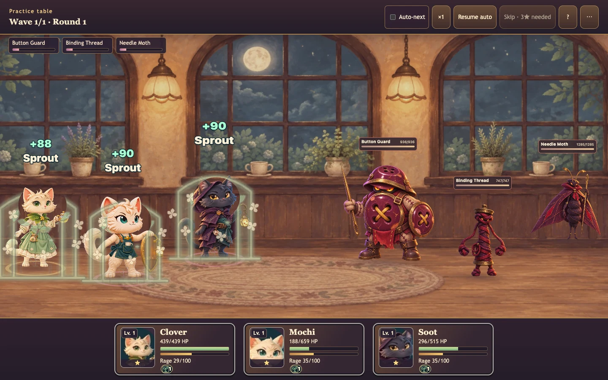
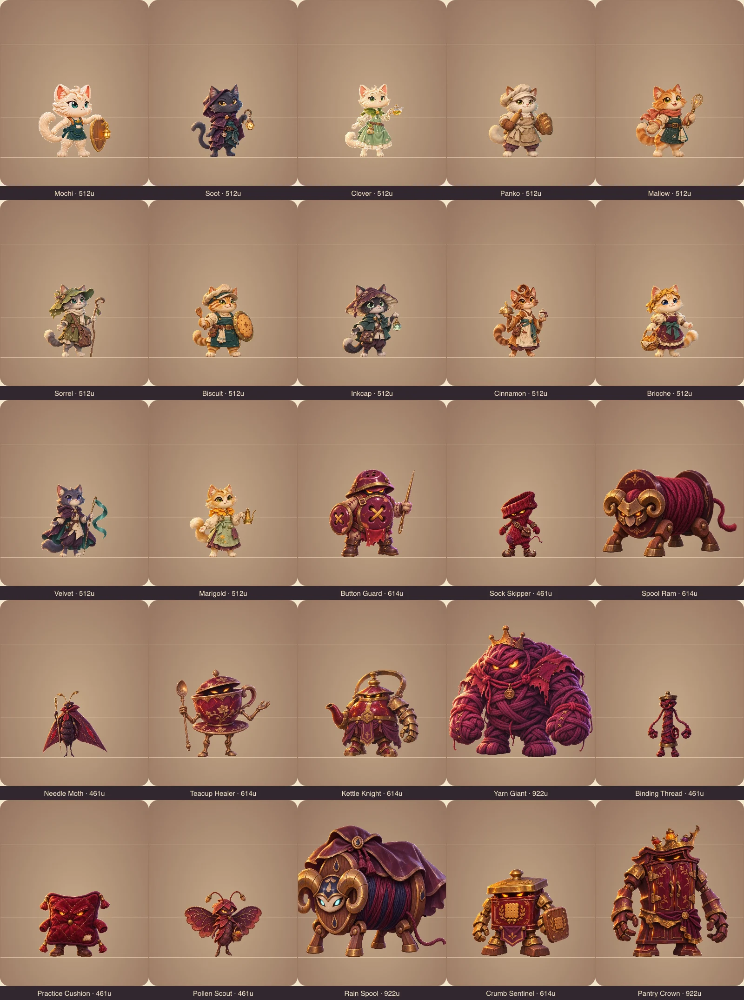

First steps after closing
Mochi, Soot and Clover work together on the night patrol.
Build a crew of curious cats, follow the night patrol, and bring a little warmth to every battle.
A work in progress. All 25 character rigs are temporary, using the original concept art. Final designer animations are pending.

Earned encounters from the 30-minute browser run, before the cafe backdrop update. Both clips retain each complete fight at ×1. The effects gallery shows the current stage.
Mochi, Soot and Clover work together on the night patrol.
A larger foe, team ultimates and a changing battle rhythm.
Choose any character and watch idle, attack, skill, ultimate, hurt, knockout, entrance and victory. Bosses also have phase and enrage clips.
Open the character viewer →Browse every skill and status effect at ×1, ×2 or ×3. Pause a moment or turn on reduced motion to inspect the action.
Open the effects gallery →All cats share one height.
Bosses stand taller; rarity does not change size.

Designer handoff: Mochi and Clover use temporary rigs from the latest layered PSDs. The recordings preserve the earlier temporary art. There are currently no accepted final designer exports, so a placeholder-versus-final comparison is not yet available.
From the repository, run pnpm --filter @taskbar-hero/web dev --host 127.0.0.1 --port 5970, then open the playable cafe. The recordings and galleries above also open directly from this folder, without a server.
Normal-fight tension, first-loss timing and the consistency of ultimate casts remain below the target. Character motion is provisional. The designer's final art, export tool and runtime license are still pending.